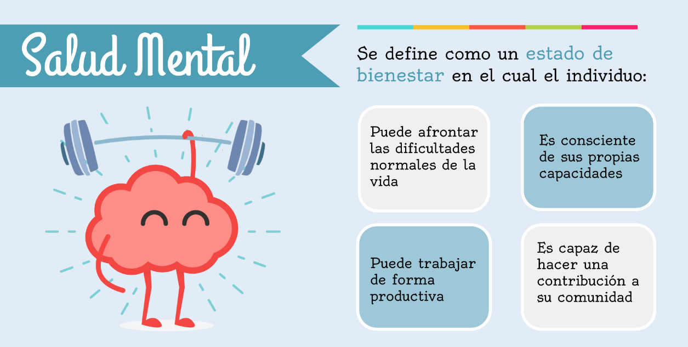
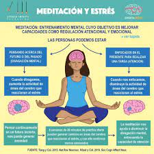

Terapia de Grupo
La terapia de grupo puede ser una herramienta eficaz para abordar una variedad de problemas de salud mental. Proporciona un entorno de apoyo donde los individuos pueden compartir sus experiencias y aprender estrategias de afrontamiento.
Aplicaciones de Meditación
Las aplicaciones de meditación pueden ayudar a mejorar el bienestar mental y reducir el estrés. Ofrecen una variedad de meditaciones guiadas y técnicas de respiración para practicar en cualquier momento y lugar.
Tabla de Recursos
| Recurso | Descripción | Enlace |
|---|---|---|
| Línea de ayuda de salud mental | Proporciona apoyo emocional, información y recursos para aquellos que luchan con problemas de salud mental. | Enlace |
| Grupo de apoyo en línea | Comunidades en línea donde los individuos pueden compartir sus experiencias y recibir apoyo de pares. | Enlace |